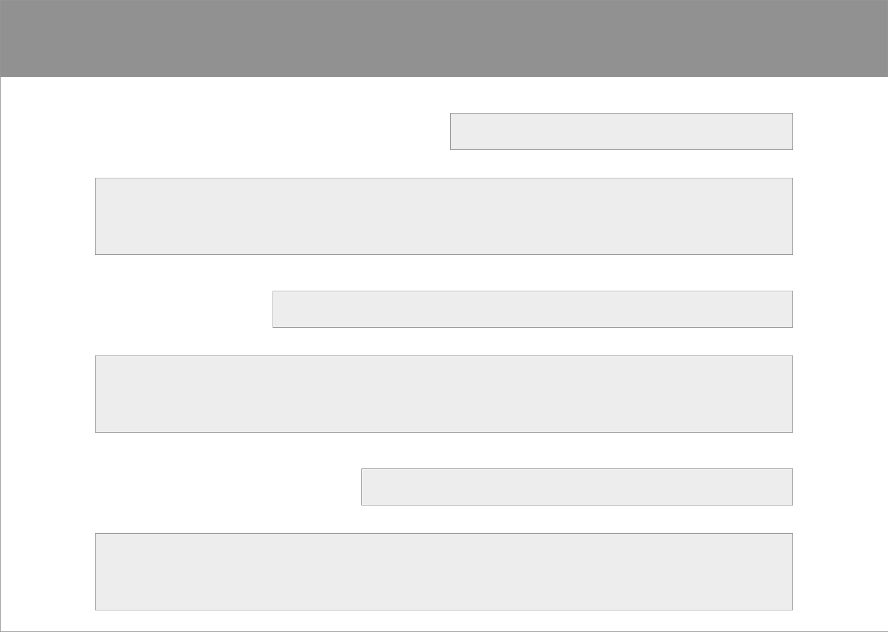

Additional design directions
I considered a handful of design directions for the layout of the interview and how it could be conveyed. I wanted to create an experience for the reader that could imitate a two-person dialogue. Some of these wireframes that I created can be seen below.
